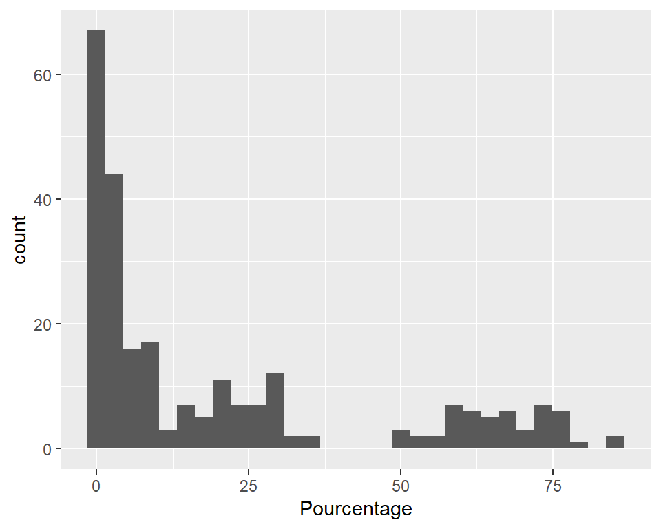
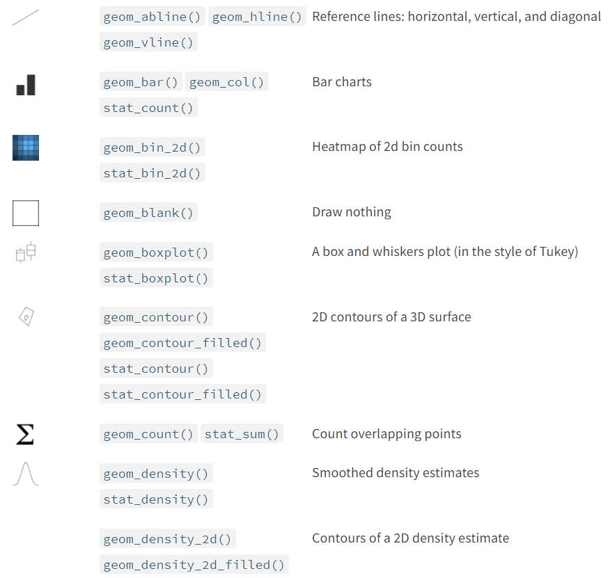
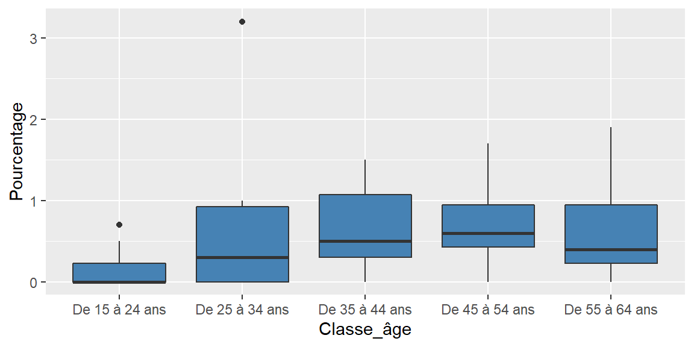

Démarche globale de l’analyse des données

A. Zaher

- le package readr est le plus utilisé pour l’importation des données dans R, notamment les deux fonctions :
read_csv() : séparateur ,
read_csv2() : séparateur ;
- Le premier argument de read_*() est le plus important : c’est le chemin d’accès au fichier à lire.
Début du tutoriel
- Accéder au dossier “Tutoriels” et ouvrir le fichier : 1_data_manipulation.rmd (après avoir télécharger le projet sur GitHub : https://github.com/zaher-stat/Atelier-R-Semaine-DATA-SHS)
- Importer le jeu de données : Intensité_symptômes_dépressif.csv (qui se trouve dans le fichier “Tutoriels/Data”) Il s’agit de données sur l’intensité des symptômes dépressifs fournies par Eurostat
intensite_depressif <- read_csv2("../Tutoriels/Data/Intensité_symptômes_dépressif.csv")
intensite_depressif## # A tibble: 500 x 6
## Pays Classe_âge Sexe Quintile_revenu Classe_intensité Pourcentage
## <chr> <chr> <chr> <chr> <chr> <dbl>
## 1 France De 15 à 24 ans F 1er_quintile Aucun ou minimum 50.2
## 2 France De 15 à 24 ans F 1er_quintile Faible 35
## 3 France De 15 à 24 ans F 1er_quintile Grave 0.5
## 4 France De 15 à 24 ans F 1er_quintile Modéré 11.8
## 5 France De 15 à 24 ans F 1er_quintile Moyennement grave 2.5
## 6 France De 15 à 24 ans H 1er_quintile Aucun ou minimum 67.7
## 7 France De 15 à 24 ans H 1er_quintile Faible 24.4
## 8 France De 15 à 24 ans H 1er_quintile Grave 0.3
## 9 France De 15 à 24 ans H 1er_quintile Modéré 6.1
## 10 France De 15 à 24 ans H 1er_quintile Moyennement grave 1.5
## # ... with 490 more rows==> Les données sont-elles “tidy” ?
- Afficher les variables de la base de données :
## [1] "Pays" "Classe_âge" "Sexe" "Quintile_revenu"
## [5] "Classe_intensité" "Pourcentage"## spec_tbl_df [500 x 6] (S3: spec_tbl_df/tbl_df/tbl/data.frame)
## $ Pays : chr [1:500] "France" "France" "France" "France" ...
## $ Classe_âge : chr [1:500] "De 15 à 24 ans" "De 15 à 24 ans" "De 15 à 24 ans" "De 15 à 24 ans" ...
## $ Sexe : chr [1:500] "F" "F" "F" "F" ...
## $ Quintile_revenu : chr [1:500] "1er_quintile" "1er_quintile" "1er_quintile" "1er_quintile" ...
## $ Classe_intensité: chr [1:500] "Aucun ou minimum" "Faible" "Grave" "Modéré" ...
## $ Pourcentage : num [1:500] 50.2 35 0.5 11.8 2.5 67.7 24.4 0.3 6.1 1.5 ...
## - attr(*, "spec")=
## .. cols(
## .. Pays = col_character(),
## .. Classe_âge = col_character(),
## .. Sexe = col_character(),
## .. Quintile_revenu = col_character(),
## .. Classe_intensité = col_character(),
## .. Pourcentage = col_double()
## .. )- Accéder aux variables de la BD :
Nom_base_donnees$Nom_variable
- Tri à plat (variables qualitatives) :
##
## Allemagne France
## 250 250##
## De 15 à 24 ans De 25 à 34 ans De 35 à 44 ans De 45 à 54 ans De 55 à 64 ans
## 100 100 100 100 100##
## F H
## 250 250- Tri à plat (variables qualitatives) :
##
## 1er_quintile 2eme_quintile 3eme_quintile 4eme_quintile 5eme_quintile
## 100 100 100 100 100##
## Aucun ou minimum Faible Grave Modéré
## 100 100 100 100
## Moyennement grave
## 100dplyrLes verbes de dplyr :
- slice() : pour sélectionner des lignes du tableau selon leur position
- filter() : pour sélectionner des lignes du tableau selon une condition
- select() : pour sélectionner des colonnes d’un tableau, et rename() : pour renommer des colonnes
- arrange() : pour réordonner les lignes d’un tableu selon une ou plusieurs colonnes
- mutate() : pour créer de nouvelles colonnes dans le tableau de données
dplyr- Sélectionner les données de la France :
## # A tibble: 250 x 6
## Pays Classe_âge Sexe Quintile_revenu Classe_intensité Pourcentage
## <chr> <chr> <chr> <chr> <chr> <dbl>
## 1 France De 15 à 24 ans F 1er_quintile Aucun ou minimum 50.2
## 2 France De 15 à 24 ans F 1er_quintile Faible 35
## 3 France De 15 à 24 ans F 1er_quintile Grave 0.5
## 4 France De 15 à 24 ans F 1er_quintile Modéré 11.8
## 5 France De 15 à 24 ans F 1er_quintile Moyennement grave 2.5
## 6 France De 15 à 24 ans H 1er_quintile Aucun ou minimum 67.7
## 7 France De 15 à 24 ans H 1er_quintile Faible 24.4
## 8 France De 15 à 24 ans H 1er_quintile Grave 0.3
## 9 France De 15 à 24 ans H 1er_quintile Modéré 6.1
## 10 France De 15 à 24 ans H 1er_quintile Moyennement grave 1.5
## # ... with 240 more rowsdplyr- Sélectionner les données de la France pour la classe d’âge de 25 à 34 ans :
intensite_depressif_Fr_CA34 <- intensite_depressif %>% filter(Pays == "France" & Classe_âge == "De 25 à 34 ans")
intensite_depressif_Fr_CA34## # A tibble: 50 x 6
## Pays Classe_âge Sexe Quintile_revenu Classe_intensité Pourcentage
## <chr> <chr> <chr> <chr> <chr> <dbl>
## 1 France De 25 à 34 ans F 1er_quintile Aucun ou minimum 57.2
## 2 France De 25 à 34 ans F 1er_quintile Faible 22
## 3 France De 25 à 34 ans F 1er_quintile Grave 1
## 4 France De 25 à 34 ans F 1er_quintile Modéré 17.1
## 5 France De 25 à 34 ans F 1er_quintile Moyennement grave 2.7
## 6 France De 25 à 34 ans H 1er_quintile Aucun ou minimum 59.3
## 7 France De 25 à 34 ans H 1er_quintile Faible 31.1
## 8 France De 25 à 34 ans H 1er_quintile Grave 0
## 9 France De 25 à 34 ans H 1er_quintile Modéré 8
## 10 France De 25 à 34 ans H 1er_quintile Moyennement grave 1.6
## # ... with 40 more rows%>%- Extraire les données de la France pour la classe d’âge de 25 à 34 ans avec filter, sélectionner les colonnes “Classe_âge” et “Pourcentage” avec select puis trier selon la variable “Pourcentage” avec arrange :
intensite_depressif %>%
filter(Pays == "France" & Classe_âge == "De 25 à 34 ans") %>%
select(Classe_âge, Pourcentage) %>%
arrange(Pourcentage)## # A tibble: 50 x 2
## Classe_âge Pourcentage
## <chr> <dbl>
## 1 De 25 à 34 ans 0
## 2 De 25 à 34 ans 0
## 3 De 25 à 34 ans 0
## 4 De 25 à 34 ans 0
## 5 De 25 à 34 ans 0
## 6 De 25 à 34 ans 0
## 7 De 25 à 34 ans 0.3
## 8 De 25 à 34 ans 0.4
## 9 De 25 à 34 ans 0.6
## 10 De 25 à 34 ans 0.7
## # ... with 40 more rows- group_by() : permet de définir des groupes de lignes à partir des valeur d’une ou plusieurs colonnes
- summarise() : permet d’agréger les lignes du tableau en effectuant une opération “résumée” sur une ou plusieurs colonnes
- count() : pour compter le nombre de lignes par groupe
- Exemple : Calculer le pourcentage moyen par classe d’intensité
## # A tibble: 5 x 2
## Classe_intensité Moyenne
## <chr> <dbl>
## 1 Aucun ou minimum 66.3
## 2 Faible 24.2
## 3 Grave 0.548
## 4 Modéré 6.92
## 5 Moyennement grave 2.08- Exemple : Calculer le pourcentage moyen par classe d’intensité et par classe d’âge
intensite_depressif_Fr %>%
group_by(Classe_intensité, Classe_âge) %>%
summarise(Moyenne = mean(Pourcentage))| Classe_intensité | Classe_âge | Moyenne |
|---|---|---|
| Aucun ou minimum | De 15 à 24 ans | 61.84 |
| Aucun ou minimum | De 25 à 34 ans | 63.84 |
| Aucun ou minimum | De 35 à 44 ans | 69.44 |
| Aucun ou minimum | De 45 à 54 ans | 66.93 |
| Aucun ou minimum | De 55 à 64 ans | 69.36 |
| Faible | De 15 à 24 ans | 28.73 |
| Faible | De 25 à 34 ans | 25.78 |
| Faible | De 35 à 44 ans | 22.60 |
| Faible | De 45 à 54 ans | 22.80 |
| Faible | De 55 à 64 ans | 20.98 |
| Grave | De 15 à 24 ans | 0.15 |
| Grave | De 25 à 34 ans | 0.65 |
| Grave | De 35 à 44 ans | 0.67 |
| Grave | De 45 à 54 ans | 0.67 |
| Grave | De 55 à 64 ans | 0.60 |
| Modéré | De 15 à 24 ans | 7.46 |
| Modéré | De 25 à 34 ans | 8.35 |
| Modéré | De 35 à 44 ans | 5.24 |
| Modéré | De 45 à 54 ans | 7.30 |
| Modéré | De 55 à 64 ans | 6.23 |
| Moyennement grave | De 15 à 24 ans | 1.82 |
| Moyennement grave | De 25 à 34 ans | 1.38 |
| Moyennement grave | De 35 à 44 ans | 2.05 |
| Moyennement grave | De 45 à 54 ans | 2.30 |
| Moyennement grave | De 55 à 64 ans | 2.83 |
ggplot2- Un graphique ggplot2 s’initialise à l’aide de la fonction ggplot(), qui prend en argument la tableau des données :
- les éléments de représentation graphique sont appelés des geom, et on les ajoute à l’objet graphique de base avec l’opérateur + :
ggplot2- Reste à indiquer quelle donnée nous voulons représenter sous forme d’histogramme. Cela se fait à l’aide d’arguments passés via la fonction aes() :

ggplot2- il existe un grand nombre de geom, décrits en détail dans la documentation officielle

ggplot2- Tracer un diagramme en bâton pour le pourcentage de chaque classe d’intensité chez les femmes âgée de 45 à 54 ans dans le 5ème quintile de revenu.
## Préparation des données
data_plot <- intensite_depressif_Fr %>% filter(Classe_âge == "De 45 à 54 ans" & Sexe == "F" & Quintile_revenu == "5eme_quintile")
## Plot
ggplot(data = data_plot) + geom_bar(aes(x = Classe_intensité, y = Pourcentage), stat = "identity")
ggplot2- Représenter des boîtes à moustaches pour les classes d’âges chez la population représentant des intensités sévères.
## Préparation des données
data_plot <- intensite_depressif_Fr %>% filter(Classe_intensité == "Grave")
## Plot
ggplot(data = data_plot) + geom_boxplot(aes(x = Classe_âge, y = Pourcentage), fill = "steelblue")
ggplot2Faceting
Le faceting permet d’effectuer plusieurs fois le même graphique selon les valeurs d’une ou plusieurs variables qualitatives :
ggplot(data = data_plot) +
geom_boxplot(aes(x = Classe_âge, y = Pourcentage)) +
facet_wrap(vars(Sexe))
- Pour compiler le fichier entier, appuyez sur le bouton Knit ou Ctrl+Maj+K
NB : avant de compiler le fichier Rmarkdown, télécharger l’extension rmdformats pour avoir le thème choisi dans l’en-tête du fichier (rmdformats::readthedown).
Module 1 bis (7 décembre 2021) : Accéder au tutoriel